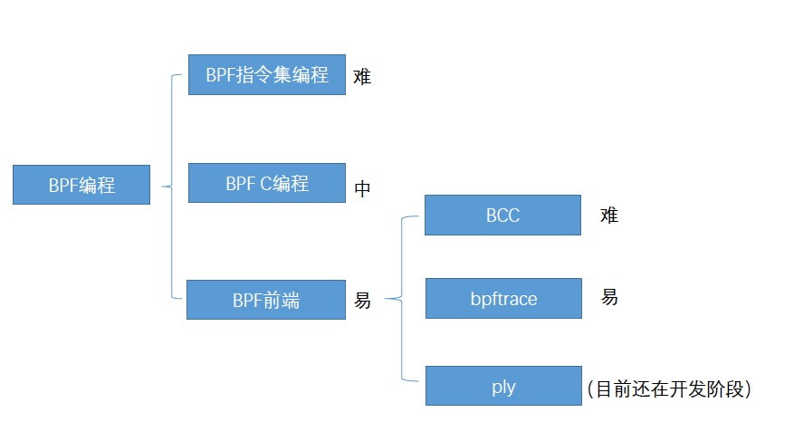

介绍
BPF（Berkeley Packet Filter ），中文翻译为伯克利包过滤器，是类 Unix 系统上数据链路层的一种原始接口，提供原始链路层封包的收发。1992 年，Steven McCanne 和 Van Jacobson 写了一篇名为《BSD数据包过滤：一种新的用户级包捕获架构》的论文。在文中，作者描述了他们如何在 Unix 内核实现网络数据包过滤，这种新的技术比当时最先进的数据包过滤技术快 20 倍。BPF 在数据包过滤上引入了两大革新：
一个新的虚拟机 (VM) 设计，可以有效地工作在基于寄存器结构的 CPU 之上；
应用程序使用缓存只复制与过滤数据包相关的数据，不会复制数据包的所有信息。这样可以最大程度地减少BPF 处理的数据；
由于这些巨大的改进，所有的 Unix 系统都选择采用 BPF 作为网络数据包过滤技术，直到今天，许多 Unix 内核的派生系统中（包括 Linux 内核）仍使用该实现。
2014 年初，Alexei Starovoitov 实现了 eBPF（extended Berkeley Packet Filter）。经过重新设计，eBPF 演进为一个通用执行引擎，可基于此开发性能分析工具、软件定义网络等诸多场景。eBPF 最早出现在 3.18 内核中，此后原来的 BPF 就被称为经典 BPF，缩写 cBPF（classic BPF），cBPF 现在已经基本废弃。现在，Linux 内核只运行 eBPF，内核会将加载的 cBPF 字节码透明地转换成 eBPF 再执行。
eBPF 新的设计针对现代硬件进行了优化，所以 eBPF 生成的指令集比旧的 BPF 解释器生成的机器码执行得更快。扩展版本也增加了虚拟机中的寄存器数量，将原有的 2 个 32 位寄存器增加到 10 个 64 位寄存器。由于寄存器数量和宽度的增加，开发人员可以使用函数参数自由交换更多的信息，编写更复杂的程序。总之，这些改进使 eBPF 版本的速度比原来的 BPF 提高了 4 倍。
eBPF 在 Linux 3.18 版本以后引入，并不代表只能在内核 3.18+ 版本上运行，低版本的内核升级到最新也可以使用 eBPF 能力，只是可能部分功能受限，比如我测试在CentOS7 3.10.940 以上都可以受限使用部分eBPF功能，低版本CentOS7 可以yum升级内核，重启支持部分eBPF 功能。
# yum install kernel kernel-devel kernel-headers -y
# reboot

eBPF 分为用户空间程序和内核程序两部分：
用户空间程序负责加载 BPF 字节码至内核，如需要也会负责读取内核回传的统计信息或者事件详情； 内核中的 BPF 字节码负责在内核中执行特定事件，如需要也会将执行的结果通过 maps 或者 perf-event 事件发送至用户空间； 其中用户空间程序与内核 BPF 字节码程序可以使用 map 结构实现双向通信，这为内核中运行的 BPF 字节码程序提供了更加灵活的控制。
用户空间程序与内核中的 BPF 字节码交互的流程主要如下：
我们可以使用 LLVM 或者 GCC 工具将编写的 BPF 代码程序编译成 BPF 字节码； 然后使用加载程序 Loader 将字节码加载至内核；内核使用验证器（verfier） 组件保证执行字节码的安全性，以避免对内核造成灾难，在确认字节码安全后将其加载对应的内核模块执行；BPF 观测技术相关的程序程序类型可能是 kprobes/uprobes/tracepoint/perf_events 中的一个或多个，其中： kprobes：实现内核中动态跟踪。 kprobes 可以跟踪到 Linux 内核中的导出函数入口或返回点，但是不是稳定 ABI 接口，可能会因为内核版本变化导致，导致跟踪失效。 uprobes：用户级别的动态跟踪。与 kprobes 类似，只是跟踪用户程序中的函数。 tracepoints：内核中静态跟踪。tracepoints 是内核开发人员维护的跟踪点，能够提供稳定的 ABI 接口，但是由于是研发人员维护，数量和场景可能受限。 perf_events：定时采样和 PMC。 内核中运行的 BPF 字节码程序可以使用两种方式将测量数据回传至用户空间 maps 方式可用于将内核中实现的统计摘要信息（比如测量延迟、堆栈信息）等回传至用户空间； perf-event 用于将内核采集的事件实时发送至用户空间，用户空间程序实时读取分析；

